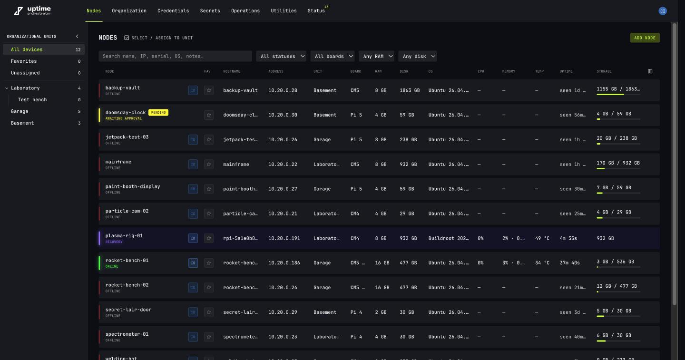

Quick start
Install the server with one command, sign in as the owner and change the generated password.
Uptime Orchestrator is a control plane for fleets of Raspberry Pi–class devices. You adopt devices into it, install operating systems on them over the network, and manage who can log in, which software runs and which automation fires — from one web UI. This page takes you from an empty machine to a signed-in server; the next pages add devices to it.
Before you start
You need a machine for the server and a way for your devices to reach it.
- The server. The declared platform for the first release is an x86-64 virtual machine or host running Debian or Ubuntu, with 4 GB of RAM and disk space for your OS images (a Raspberry Pi OS image is a few gigabytes; a captured disk is the size of the device's disk). The installer installs Docker itself on Ubuntu; on another distribution it tells you to install it first. Run the installer as root or as a user who can use
sudo. - A name or address. Decide how devices and browsers will reach the server: - On a local network — a name your router gives the machine, or its LAN address. Plain HTTP, no certificate. Ports 80 and 50051 must be free on the machine. - From the internet — a public DNS name that already points at the machine, with ports 80, 443 and 50051 open to the internet. The server gets a Let's Encrypt certificate.
- The installer also needs the loopback ports 8080, 8088 and 50052 free; it refuses to start if anything holds them and tells you how to find what does.
The managed devices are Raspberry Pi family boards with a 64-bit OS, connected over Ethernet. The supported hardware list says which boards are validated.
What is free. A self-hosted install manages 25 devices free, counted across the whole install. A device is counted once it is admitted (approved and connected); a device still waiting for approval is not. Past 25, a new device waits un-admitted until you apply an entitlement file. Nothing already adopted is ever locked out, and no download is gated. The details are in ENTITLEMENT.md.
Run the installer
On the server, run:
curl -fsSL https://get.orchestrator.sh | shIt asks four things, checks every answer, the install directory and every port before it changes anything on the machine, and then asks Install now? (y/n).
| Question | What your answer means |
|---|---|
How will your devices and your browser reach this server? 1) On my local network only, 2) From the internet | Picks the shape described above. The default is 1. |
| Name or address the devices should use (local network) | The installer offers the name your router gives this machine, or its address if there is no such name. A multicast .local name is refused: a laptop resolves it, a Raspberry Pi bootloader does not. An address that does not belong to this machine is refused too. |
| DNS name that points at this machine (internet) | For example orchestrator.uptime.example. The installer tells you what the name resolves to; it must be this machine's public address. |
| Email address for Let's Encrypt expiry notices (internet) | Where Let's Encrypt writes about the certificate. Leave it empty for none. |
| Set up network boot? (y/n) | Network boot lets a blank device start from this server and get an OS installed from the web UI, with no card. Answering y downloads a recovery image (about 100 MB) and generates a signing key that never leaves the machine. Without it you can still adopt devices that already run an OS. |
| Email address the owner signs in with | The first account of the server. The installer creates it itself, before the server is reachable from the network, so nobody else can claim the server meanwhile. |
Then it installs Docker if needed, fetches the latest release, writes the credential files and the environment file, starts the stack, creates the owner account, opens the server to the network, imports the latest agent release and — if you asked for it — sets up network boot. Everything goes into ./orchestrator under the directory you ran the command from.
Every question is also a flag, so you can run the installer unattended; install.sh --help lists them, and INSTALL.md explains each.
When the certificate does not arrive
From the internet, Let's Encrypt must reach the machine by its name on port 80. If HTTPS does not answer within about two minutes, the installer restarts the proxy once, then finishes the rest and exits with an error that names what to check: the DNS name resolving to the machine's public address from outside your network, and port 80 open to the internet. Once both are right, run docker restart orchestrator-proxy, or run the installer again.
What the installer prints
The run ends with a summary like this one, from an internet install with network boot run in /root (the version, address and paths are yours):
Uptime Orchestrator 0.1.0 is running.
Open: https://orchestrator.uptime.example
Sign in as inventor@uptime.example with the password in
/root/orchestrator/owner-password
then change it in the web UI and delete that file.
Sign-up is closed: colleagues join by invitation.
Then add a device: Nodes -> Add node. A Raspberry Pi that already runs
a 64-bit Debian-based OS (Raspberry Pi OS, Ubuntu) joins with the one
command shown there; the command needs the board's hardware serial.
A blank device joins from a provisioning card (Account -> Download
SD provisioning) and gets its operating system from the web UI.
Keep safe, off this machine:
/root/orchestrator/secrets/secrets_encryption_key (a database backup is unreadable without it)
/root/orchestrator/data/eeprom-keys/privkey.pem (the only key your devices' bootloaders accept)- The owner account signs in with the email you gave and a generated password stored in
owner-passwordin the install directory, readable only by you. - Sign-up is closed. The first account owns the server. Colleagues join it by invitation (see Team and security).
- Keep two files safe, off this machine.
secrets_encryption_keyis what makes a database backup readable.privkey.pemexists only if you set up network boot; it is the only key your devices' bootloaders accept. Lose it and devices set up for network boot cannot be signed for again. - If network boot could not be set up, the summary says NETWORK BOOT IS NOT READY, names the step that failed, and the installer exits with an error; run it again with the same answers to retry. If the certificate is still missing, it says ONE STEP REMAINS (see above).
- On a local network the summary also warns that the server speaks plain HTTP: do not forward its ports to the internet.
Sign in for the first time
Open the address from the summary in a browser. The sign-in page asks for Your Email and Password; enter the owner's email and the contents of owner-password, then click Sign In.
The first screen is Nodes, the device list. On a new server it is empty and says so; the page below shows a server with a fleet already added, so you can see where things will appear.

The top bar holds the main sections, the left column lists your organizational units, and the round badge on the right opens your account menu. A tour of the interface explains each part.
Change the generated password
- Click the round badge with your initials at the top right. The account menu opens.

- Click Account Settings. The Account tab opens.
- Scroll to Password and click the heading to expand it.

- Type the new password into New password and again into Confirm password. It must be at least 8 characters.
- Click Save password. Because this changes how the account signs in, a Confirm it's you dialog asks for your Current password — paste the generated one — and Confirm.
- The section reports Password saved. Other sessions were signed out.
Then delete the generated password from the server:
rm ./orchestrator/owner-passwordIf you lose the password later, an install without a mail relay has no self-service reset: the sign-in page tells you to ask the operator. As the operator, reset it from the server with the --reset-password command described in INSTALL.md.
Where to go next
- Add a device — the installer's summary points at the same place: Nodes → Add node.
- A tour of the interface — what each section is for, and how the Nodes table, filters and units work.